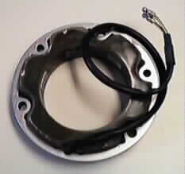
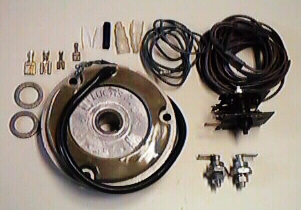

Commandos currently have three types of alternators available:
 Single Phase, 130 watts Alternator:
Single Phase, 130 watts Alternator:
This consists of the Lucas rotor (part # 54202298, which superceeds all the previous rotor
numbers) and the Lucas stator (part # 47205). The rotor is the welded construction type rotor.
This alternator has two wires and is used along with one Zener Diode (part # 49345)
and a Lucas single phase rectifier, (part # 49072).
You can use the Motoline Rectifier (part # 17-49072/R)
or either of the solid state rectifiers (part # 17-49072/SS
or 51-332101) to replace the Lucas 49072 rectifier.
If you want to replace both the Zener Diode and the rectifier, you can use the
Podtronics Voltage regulator-rectifier (part # 17-17104) or the
Boyer Power Box (part #. 17-400001)
or the Tympanium Voltage regulator-rectifier (part # 17-01233).

Single Phase, 180 watts Alternator:
This consists of the Lucas rotor (part # 54202298, which is the same rotor as used in the
130 watts alternator) and the Lucas stator (part # 47239 or 47194).
The rotor is the welded construction type rotor.
This alternator has two wires and is used along with two Zener Diodes (part # 49345)
and a Lucas single phase rectifier, (part # 49181).
You can use the solid state rectifiers (part # 17-49072/SS
) to replace the Lucas 49181 rectifier.
If you want to replace both the Zener Diodes and the rectifier, you can use the
Podtronics Voltage regulator-rectifier (part # 17-17104) or the
Boyer Power Box (part # 17-400001) or
the Tympanium Voltage regulator-rectifier (part # 17-01233).
Three Phase, 180 watts Alternator:
This consists of the Lucas rotor (part # 54202298, which is the same rotor as used in both
the 130 watts and 180 watts single phase alternators) and the Lucas stator
(part # 47244). The rotor is the welded construction type rotor.
This alternator has three wires and is used along with two Zener Diodes (part # 49345)
and a three phase Lucas rectifier, (part # 47252).
If you want to replace both the Zener Diodes and the rectifier, you can use the
Podtronics Voltage regulator-rectifier (part # 17-17104) or the
Boyer Power Box (part # 17-400002)
or the Podtronics Regulator-Rectifier (part # 17-17105).

Lucas Powerbase Hi-Output 3-Phase Alternator Kit (part # 17-333131),
see Lucas 3-Phase Alternator Kit.
LUCAS/Boyer Hi-Output 3-Phase Alternator Kit (part # 17-400007), see Lucas/Boyer 3-Phase Alternator Kit.
LUCAS/Podtronics Hi-Output 3-Phase Alternator Kit (part # 17-400008), see Lucas?Podtronics 3-Phase Alternator Kit.
This page was written and designed by F. H. Eaton & Associates if you have any questions or comments please contact us at infon@fheaton.com